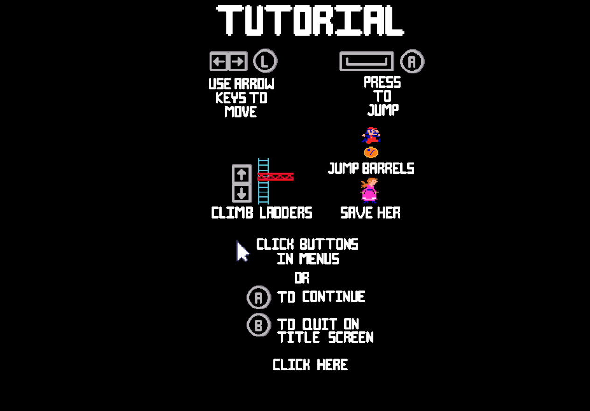
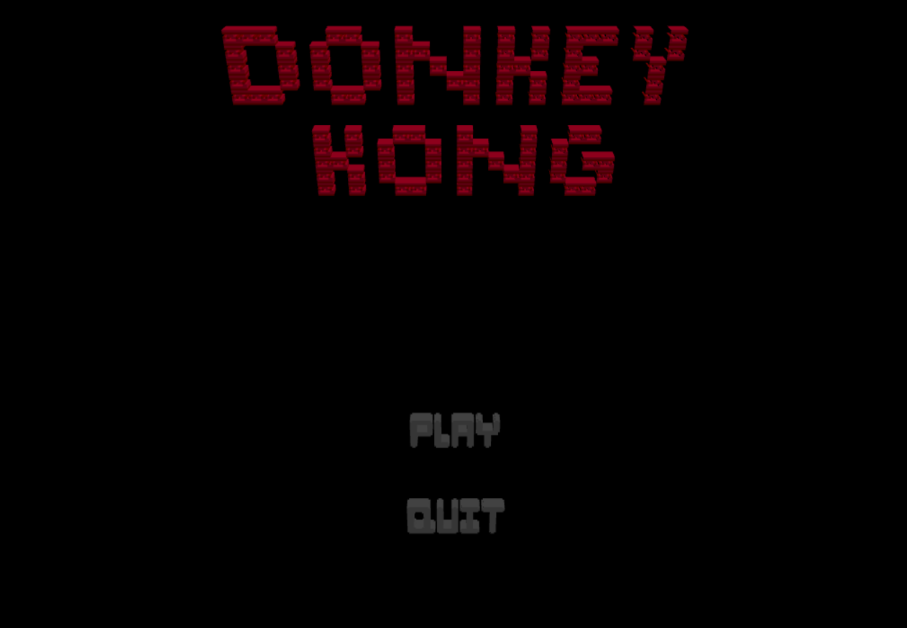
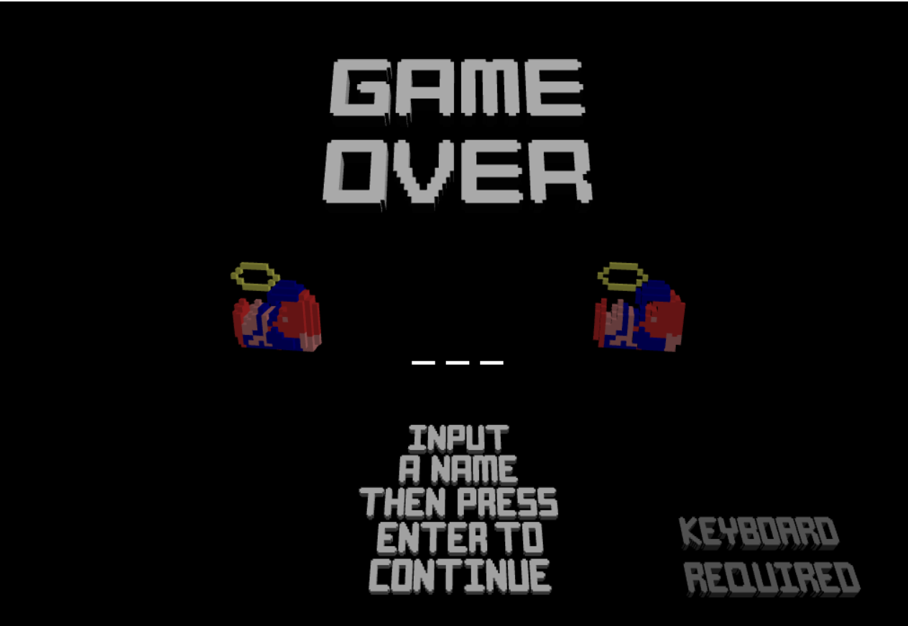
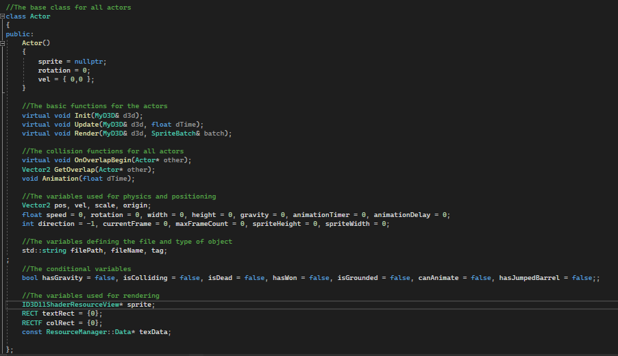
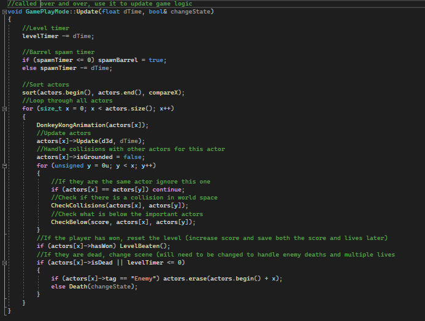

Donkey Kong DX11


This is a project that I made using directX and C++ in 7 weeks. I decided to recreate a simple version of the original arcade donkey kong. Due to the time I had to do this, many aspects of the game are simplified or removed. However, as you can see from the video the game was recreated in a playable state. If I were to continue this project I would like to further add the missing components, like the fire enemies. I would also change the gameplay graphics to be 3D, while using the same 2D logic. I am still pleased with the outcome of this project as it shows a foundational knowledge of C++ and game development, since I needed to make a lot of this stuff from scratch.
- 
- 
- 
Code snippets:
-
 In my game I created two function that use simple AABB Collision to register whenever any objects collide. I decided on using this because of its simplicity, efficiency and due to the fact all collisions
would be boxes anyway. The first function handles any object on object collision. However, I also opted to use it in the menus to detect when a mouse cursor is hovering over a button. While there may have been
better ways to do this, the menus were a very small part of the game and did not require much more efficiency and as I already had the code for this detection, I decided it would be better use of my time to re-use
AABB collision and focus on more vital game mechanics.
In my game I created two function that use simple AABB Collision to register whenever any objects collide. I decided on using this because of its simplicity, efficiency and due to the fact all collisions
would be boxes anyway. The first function handles any object on object collision. However, I also opted to use it in the menus to detect when a mouse cursor is hovering over a button. While there may have been
better ways to do this, the menus were a very small part of the game and did not require much more efficiency and as I already had the code for this detection, I decided it would be better use of my time to re-use
AABB collision and focus on more vital game mechanics.
-  I also decided that when it came to making the objects in my scene, I would inherit them from a base class known as actor. There were a lot of variables and functions that these obkects had in common, sprite size and animation. This also allowed me to share some basic functions with them, like loading a texture or rendering that texture. This also made my systems like my collision detection and rendering a lot easier and more efficient. This is because all actors, in a scece, could go into a vector and we can loop through all the of them for these functions (more on that next). It also meant I could clear them all from memory a lot easier and then use the same vector for future scenes.
-  The update function is where the actor inheritance was extremely useful. Here I designed the game to sort all the actors in the vector from left to right. Then I would update them, thanks to the sorted list I could use a sweep and prune algorithm to more efficiently check through larger lists of actors in the scene. Then I can finally check all actors for death logic. One flaw to this current system is that the actors function needs items like floors in the vector, so that they can be checked for collisions. But that leaves them with a lot of unnecessary data so while I would happily use this method again, I may take some time to redesign it with static actors in mind.